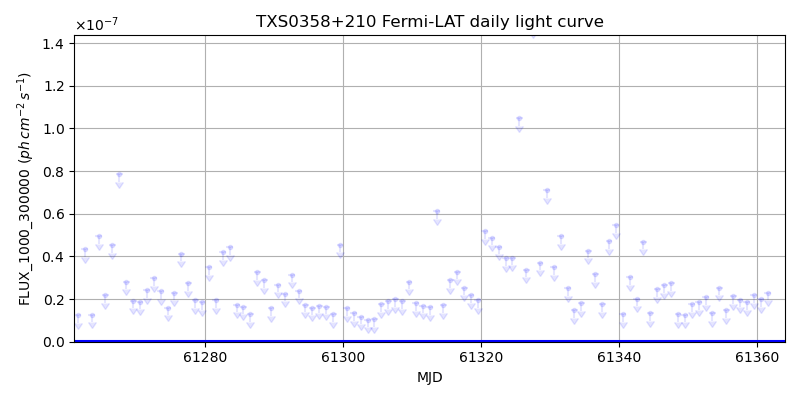
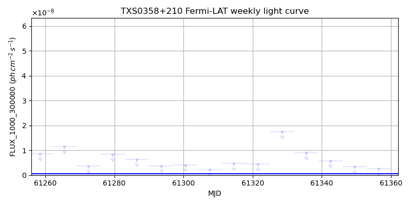

LAT Lightcurve site: https://fermi.gsfc.nasa.gov/ssc/data/access/lat/msl_lc/source/TXS_0358p210
NED: Query
Time of last update of this page: UT: 2026-11-28 16:14 (MJD: 61372.677)
| Property | Value |
|---|---|
| R.A. | 4:01:45.12 |
| Dec. | 21:10:30.0 |
| z | 0.834 |
| 3FGL SpectrumType | PowerLaw |
| 3FGL PL Index | 2.35 |
| 3FGL Flux_100_300000 | 1.12e-08 1 / (s cm2) |
| 3FGL Flux_1000_300000 | 4.97e-10 1 / (s cm2) |
| 3FGL Flux >200 GeV | 3.85e-13 1 / (s cm2) |
| 3FGL Extrap. Crab >200 GeV | 0.00 |
| 3FGL Flux After EBL Absorption >200GeV | 1.24e-14 1 / (s cm2) |
| 3FGL EBL Crab Fraction >200GeV | 0.00 |
| MJD | dMJD | Flux | dFlux | Frac3FGL | FracCrab>200GeV | EBLFracCrab>200GeV |
|---|---|---|---|---|---|---|
| 61357.50 | 0.50 | 8.62e-08 | 0.00e+00 | 0.00 | 0.00 | 0.00 |
| 61358.50 | 0.50 | 8.87e-08 | 0.00e+00 | 0.00 | 0.00 | 0.00 |
| 61359.50 | 0.50 | 1.33e-07 | 0.00e+00 | 0.00 | 0.00 | 0.00 |
| 61360.50 | 0.50 | 9.41e-08 | 0.00e+00 | 0.00 | 0.00 | 0.00 |
| 61361.50 | 0.50 | 7.08e-08 | 0.00e+00 | 0.00 | 0.00 | 0.00 |

| MJD | dMJD | Flux | dFlux | Frac3FGL | FracCrab>200GeV | EBLFracCrab>200GeV |
|---|---|---|---|---|---|---|
| 61335.50 | 3.50 | 6.97e-08 | 0.00e+00 | 0.00 | 0.00 | 0.00 |
| 61342.50 | 3.50 | 7.76e-08 | 0.00e+00 | 0.00 | 0.00 | 0.00 |
| 61349.50 | 3.50 | 3.99e-08 | 0.00e+00 | 0.00 | 0.00 | 0.00 |
| 61356.50 | 3.50 | 6.90e-09 | 0.00e+00 | 0.00 | 0.00 | 0.00 |
| 61363.50 | 3.50 | 4.32e-08 | 0.00e+00 | 0.00 | 0.00 | 0.00 |

| MJD | dMJD | Flux | dFlux | Frac3FGL | FracCrab>200GeV | EBLFracCrab>200GeV |
|---|---|---|---|---|---|---|
| 61357.50 | 0.50 | 1.97e-08 | 0.00e+00 | 0.00 | 0.00 | 0.00 |
| 61358.50 | 0.50 | 1.87e-08 | 0.00e+00 | 0.00 | 0.00 | 0.00 |
| 61359.50 | 0.50 | 2.19e-08 | 0.00e+00 | 0.00 | 0.00 | 0.00 |
| 61360.50 | 0.50 | 2.00e-08 | 0.00e+00 | 0.00 | 0.00 | 0.00 |
| 61361.50 | 0.50 | 2.30e-08 | 0.00e+00 | 0.00 | 0.00 | 0.00 |

| MJD | dMJD | Flux | dFlux | Frac3FGL | FracCrab>200GeV | EBLFracCrab>200GeV |
|---|---|---|---|---|---|---|
| 61335.50 | 3.50 | 8.95e-09 | 0.00e+00 | 0.00 | 0.00 | 0.00 |
| 61342.50 | 3.50 | 5.76e-09 | 0.00e+00 | 0.00 | 0.00 | 0.00 |
| 61349.50 | 3.50 | 3.47e-09 | 0.00e+00 | 0.00 | 0.00 | 0.00 |
| 61356.50 | 3.50 | 2.62e-09 | 0.00e+00 | 0.00 | 0.00 | 0.00 |
| 61363.50 | 3.50 | 1.03e-08 | 0.00e+00 | 0.00 | 0.00 | 0.00 |
--------------------------------------------------------- Using user-supplied coords: 4:01:45.12 21:10:30.0 2000 --------------------------------------------------------- FLWO UT night of: 2026-11-29 Local Sid. @ Midnight: 04:08 Sunset (-15.0) (local, UT): 18:31 01:31 Sunrise (-15.0) (local, UT): 05:53 12:53 Moonrise (local, UT): 21:57 04:57 Moonset (local, UT): Moon phase: 0.72 --------------------------------------------------------- AzTime LSID UT Obj_el Obj_az Mn_el Mn_az Sep. --------------------------------------------------------- 18:31 22:39 01:31 18.4 75.9 -32.9 32.1 66.1 19:01 23:09 02:01 24.6 79.3 -29.4 38.9 66.5 19:31 23:39 02:31 30.9 82.7 -25.4 45.0 66.9 20:01 00:09 03:01 37.3 86.2 -21.0 50.6 67.2 20:31 00:39 03:31 43.7 90.0 -16.2 55.6 67.6 21:01 01:09 04:01 50.1 94.2 -11.1 60.2 67.9 21:31 01:39 04:31 56.4 99.1 -5.4 64.5 68.3 22:01 02:09 05:01 62.7 105.4 0.4 68.5 68.6 22:31 02:39 05:31 68.7 114.2 5.8 72.2 68.9 23:01 03:10 06:01 74.2 128.0 11.6 75.8 69.2 23:31 03:40 06:31 78.4 152.1 17.5 79.4 69.4 00:01 04:10 07:01 79.5 188.8 23.6 82.9 69.7 00:31 04:40 07:31 76.7 220.6 29.7 86.5 70.0 01:01 05:10 08:01 71.8 239.2 35.8 90.3 70.2 01:31 05:40 08:31 66.0 250.2 42.0 94.4 70.4 02:01 06:10 09:01 59.8 257.7 48.1 99.1 70.6 02:31 06:40 09:31 53.5 263.2 54.2 104.7 70.9 03:01 07:10 10:01 47.1 267.8 60.1 111.7 71.1 03:31 07:40 10:31 40.8 271.8 65.6 121.1 71.3 04:01 08:10 11:01 34.4 275.4 70.5 134.7 71.5 04:31 08:40 11:31 28.0 278.9 74.0 154.7 71.6 05:01 09:11 12:01 21.7 282.3 75.2 181.1 71.8 05:31 09:41 12:31 15.6 285.7 73.6 206.8 72.0 05:53 10:02 12:53 11.2 288.3 71.0 221.2 72.2 --------------------------------------------------------- Dark hours >55 deg.: 0.54 srcstart (UT): 2026-11-29 04:24 srcend (UT): 2026-11-29 04:57